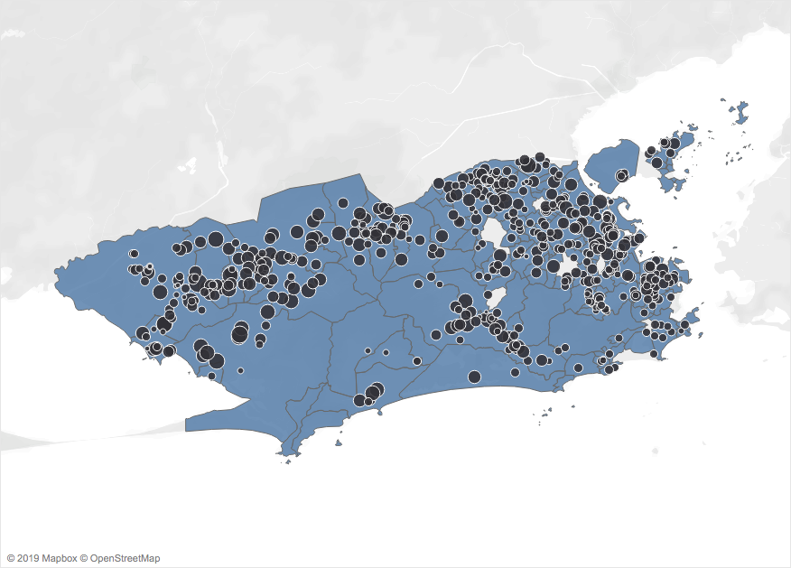
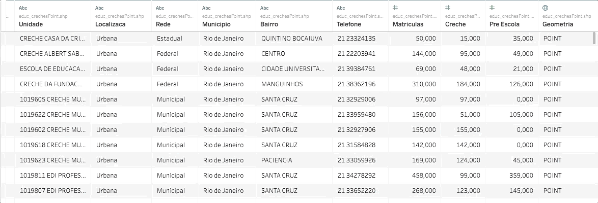

Join Espacial: o que é e para que serve
title: Join Espacial: o que é e para que serve author: Saulo Said date: ‘2019-12-18’ slug: join-espacial categories: []
tags: []

O join espacial (spatial join) foi incorporado ao Tableau na versão 2018.2, mas ainda existe pouco material sobre o assunto em português. É especialmente útil quando lidamos com dados georreferenciados. É, também, uma exclusividade do Tableau (nem adiante procurar que o concorrente não tem…).
Neste texto vou mostrar o que é e quais problemas o join espacial resolve. No próximo, vou mostrar como criá-lo no Tableau.
O join espacial permite juntar dados geográficos em pontos (isto é, com apenas latitude e longitude) com dados referentes a polígonos (ou áreas). As formas tradicionais de join não resolvem essa situação porque eles dependem que se encontre um registro de um banco no outro. E, nesse caso, os pontos não são iguais aos polígonos. A relação entre eles é que o ponto pode estar contido (ou não) em um polígono e é exatamente essa relação que o join espacial opera.
Com um exemplo tudo fica mais fácil. Primeiro vamos analisar o arquivo de mapa com os bairros do Rio de Janeiro. O mais importante é notar que existe um campo “Geometry”. Olhando para esse campo, notamos que existem dois tipos de valores: poligon e multipoligon. Ou seja, polígnos! São exemplos de polígonos as áreas de bairros, as áreas dos estados, dos municípios, dos países, ou ainda uma área dentro de uma propriedade agrícola. Veja na imagem abaixo:

Com esse banco posso criar a divisão das regiões administrativas do Rio de Janeiro.
Já o arquivo de creches também possui um campo geometry. Porém, ao olharmos os valores, notamos que todos são “point”, isto é, basicamente contem apenas um par de coordenadas geográficas (latitude e longitude).

Com esses dados, é possível apenas plotar o local exato de cada creche no mapa. Não podemos, contudo, saber em que bairro ou região administrativa se localiza determinada escola.
Porém, se eu quiser saber quantas são as vagas de creche particular por regiões administrativas? (Regiões administrativas são área definidas pela prefeitura que contém vários bairros). Ora, no arquivo de bairros eu tenho os polígonos das regiões administrativas, mas não tenho nada sobre creches. No caso do arquivo sobre creches, não tem um campo com as regiões administrativas. Quem poderá nos salvar, senão o join espacial?
Com o join espacial, eu posso fazer uma agregação com o total de matrículas (proveniente do banco de creches) usando como nível de detalhe a região administrativa (proveniente do banco de bairros). Como nas visualizações a seguir:
Ou, é possível criar um mapa que tenha tanto as RAs como a lozalização das creches.
No próximo texto, irei mostrar o passo a passo de como criar o join espacial.